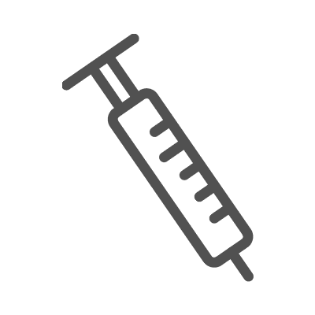

<div class="pages">
    <div data-page="projects" class="page no-toolbar no-navbar">
		<div class="page-content">
            <div class="navbarpages">
              <div class="nav_left_logo"><a href="index.html"></a></div>
              <div class="nav_right_button"><a href="menu.html"></a></div>
            </div>
    		<div id="pages_maincontent">
    			<h2 class="page_title">Tratamiento artritis reactiva</h2>
    			<div class="page_content">
                    <h3>Tratamiento de la infeccion</h3>
                    <p>Los antibióticos no están indicados para el tratamiento de la artritis reactiva específicamente, pero pueden estar indicados para, en casos seleccionados, el tratamiento de la infección de base. Para el caso de las infecciones entéricas, los antibióticos en general, no están indicados para casos de infección no complicada, pero en algunas situaciones clínicas específicas si podrían estar indicados, como es el caso de pacientes con enfermedad gastrointestinal severa, ancianos y pacientes inmunocomprometidos. Para el caso de infecciones agudas del tracto genitourinario por Chlamydia, el paciente y su pareja sexual deben recibir tratamiento antibiótico No se ha establecido el papel de la antibiótico terapia en la artritis reactiva crónica. </p>
                    <h3>Tratamiento de la artritis</h3>
                    <div class="buttons-row"> <a href="#tab1" class="tab-link active button">Artritis reactiva aguda</a> <a href="#tab2" class="tab-link button">Artritis reactiva crónica</a> </div>
                    <div class="tabs-animated-wrap">
                      <div class="tabs">
                        <div id="tab1" class="tab active">
                          <h4>Artritis reactiva aguda</h4>
                          <p> Los AINEs son empleados como primera línea de manejo (por ejemplo: naproxén 500 mg dos o tres veces al día, diclofenac 50 mg cada 8 horas) a menos que estén contraindicados (historia de sangrado gastrointestinal, alergia, enfermedad cardiovascular, compromiso de la función renal). Se debe usar la máxima dosis antiinflamatoria para controlar el dolor y la inflamación, usualmente por una a dos semanas. En caso de respuesta inadecuada a AINEs se puede aplicar un glucocorticoide a nivel de la articulación mas afectada (por ejemplo triamcinolona 40 mg en una articulación grande como la rodilla o menores dosis para pequeñas articulaciones). En pacientes quienes no respondan a AINEs o glucocorticoides intraarticulares o en aquellos con compromiso poliarticular se podría usar glucocorticoide oral (prednisolona 20 mg día), reduciéndolo gradualmente hasta llegar a la menor dosis necesaria para controlar síntomas. Si el paciente no ha respondido adecuadamente a por lo menos dos AINEs después de cuatro semanas y requiere del uso de prednisolona a dosis mayor de 7,5 mg día (o su equivalente en otro glucocorticoide) por mas de tres meses se podría considerar el uso de DMARD como se describirá en la sección de tratamiento de artritis reactiva crónica.</p>
                        </div>
                        <div id="tab2" class="tab">
                          <h4>Artritis reactiva crónica</h4>
                          <p> Los pacientes que pasen de seis meses de evolución o sean resistentes a la terapia con AINEs y/o glucocorticoides son considerados como casos crónicos de artritis reactiva. En esta situación se puede considerar el uso de DMARD, usualmente sulfasalazina (dosis inicial de 500 mg día con aumento cada semana de 500 mg hasta una dosis máxima de 1.000 cada 8 horas) o en forma alternativa metotrexate (15 a 25 mg semana). El tratamiento DMARD se mantendrá por lo menos por cuatro meses a la dosis máxima tolerada (hasta 3 gramos al día para sulfasalazina o hasta 25 mg semana para metotrexate), para determinar si ha tenido una adecuada respuesta y en caso de ser así, descontinuar tres a seis meses después de que el paciente haya entrado en remisión clínica. En caso de presentar refractariedad al tratamiento con AINEs y glucocorticoides y no respuesta o contraindicación para el uso de sulfasalazina o metotrexate se puede considerar el uso de un anti TNF (etanercept o infliximab). Si el paciente no mejora con el uso de uno de estos dos anti TNF después de tres meses , puede considerarse el uso de otros anti TNF.</p>
                        </div>
                      </div>
                    </div>
                    <h3>En el siguiente flujograma, se resume el paciente con artritis reactiva.</h3>
                    <a rel="gallery-1" href="images/photos/flujograma-ar.jpg" title="paciente con artritis reactiva" class="swipebox"></a>
                    <h3>Lecturas recomendadas</h3>
                    <ol class="simple_list">
                        <li>Rihl M, et al Reactive arthritis. Best Pract Res Clin Rheumatol 2006;20:1119-37</li>
                        <li>Yu D. Reactive arthritis. Uptodate, August 2015.</li>
                        <li>Zarco P. Diagnóstico y tratamiento de la artritis relacionada con la infección por clamidia. Reumatol Clin 2012;8:s20-s25</li>
                    </ol>
                    <ul class="features_list">
                      <li><a href="cont_artritis_r.html"><span>Ant - Artritis reactiva</span></a></li>
                      <li><a href="cont_infecciones.html"><span>Sig - Infecciones e inmunizaciones</span></a></li>
                    </ul>
                    <a href="menu.html" class="button_full">Menu principal</a>
                </div>
    		</div>
    	</div>
    </div>
</div>
